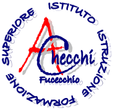

Arturo 2.0
Centro Assistenza Digitale IIS Arturo Checchi
🔄 Nuova Conversazione
🤖
Ciao! Sono Arturo.
Sono l'assistente digitale dell'IIS Arturo Checchi. Posso aiutarti a trovare informazioni sull'istituto, modulistica, orari di segreteria e supporto sui servizi digitali.
Come posso aiutarti oggi?
Invia